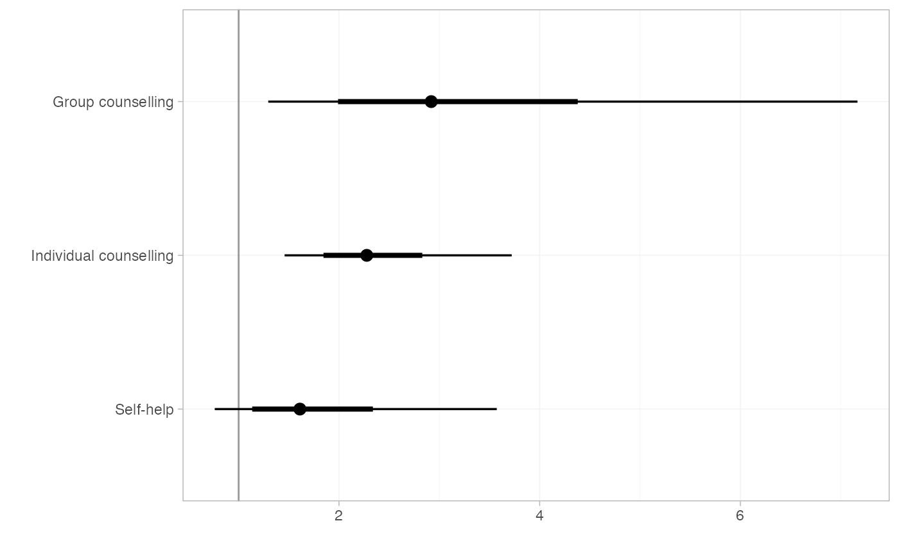

3D MCMC arrays (Iterations, Chains, Parameters) are produced by as.array()
methods applied to stan_nma or nma_summary objects.
Further arguments passed to other methods
Numeric vector of quantiles of interest
A 3D MCMC array of class mcmc_array
Character vector of replacement parameter names
The summary() method returns a nma_summary object, the print()method returns x invisibly. The names() method returns a character
vector of parameter names, and names()<- returns the object with updated
parameter names.
## Smoking cessation
# \donttest{
# Run smoking RE NMA example if not already available
if (!exists("smk_fit_RE")) example("example_smk_re", run.donttest = TRUE)
# }
# \donttest{
# Working with arrays of posterior draws (as mcmc_array objects) is
# convenient when transforming parameters
# Transforming log odds ratios to odds ratios
LOR_array <- as.array(relative_effects(smk_fit_RE))
OR_array <- exp(LOR_array)
# mcmc_array objects can be summarised to produce a nma_summary object
smk_OR_RE <- summary(OR_array)
# This can then be printed or plotted
smk_OR_RE
#> mean sd 2.5% 25% 50% 75% 97.5% Bulk_ESS Tail_ESS
#> d[Group counselling] 3.35 1.65 1.34 2.27 2.98 3.98 7.69 2054 2251
#> d[Individual counselling] 2.40 0.59 1.50 1.99 2.31 2.69 3.88 1088 1906
#> d[Self-help] 1.81 0.80 0.78 1.28 1.64 2.15 3.73 1978 2122
#> Rhat
#> d[Group counselling] 1
#> d[Individual counselling] 1
#> d[Self-help] 1
plot(smk_OR_RE, ref_line = 1)

# Transforming heterogeneity SD to variance
tau_array <- as.array(smk_fit_RE, pars = "tau")
tausq_array <- tau_array^2
# Correct parameter names
names(tausq_array) <- "tausq"
# Summarise
summary(tausq_array)
#> mean sd 2.5% 25% 50% 75% 97.5% Bulk_ESS Tail_ESS Rhat
#> tausq 0.73 0.35 0.3 0.5 0.66 0.88 1.56 1378 2025 1
# }